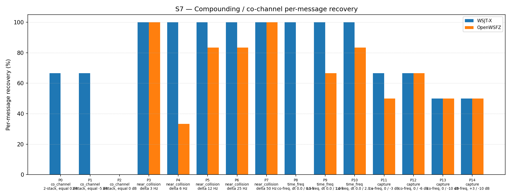

| Field | Value |
|---|---|
| Run date | 2026-06-18 |
| OpenWSFZ SHA | 3c2ad02a42e1912433c080e901569a1bb73df48a |
| WSJT-X version | WSJT-X 2.7.0 (inferred from binary date 2025-02-04) |
This is a targeted S7-only diagnostic run on branch diag/d001-h6-ap-probe
(shim 20260020). No AIAG-gated metrics (S1–S6, S8) are exercised; this run is not a
regression gate. The branch delivers three tasks:
Task A — H6 directed AP decode interop seam: ft8_set_ap_bits() is added to the
native shim. When called, it stores packed mycall/hiscall bits in TLS and injects them
as ±40.0 LLR hard constraints into log174 after waterfall extraction and before
normalisation, using the new ftx_decode_candidate_ap() path in decode.c. This is
applied during pass 0 only; pass 1 always uses unmodified waterfall LLRs.
The C# caller integration is explicitly deferred — the interop seam
(IFt8NativeInterop.SetApBits, Ft8LibInterop.SetApBits,
Ft8NativeInteropAdapter.SetApBits) is exposed but no production code calls it.
Task B — Pre-normalisation variance probe (H_LLR_VAR): The shim 20260019 LLR
probe (ftx_compute_candidate_llr_mean_abs) established that post-normalisation
mean|LLR| is a tautological constant (≈3.91) due to ftx_normalize_logl. The redesign
(ftx_compute_candidate_llr_stats) additionally captures the pre-normalisation
variance of the raw log174 array. The H_LLR_VAR hypothesis is: co_channel
interference produces low pre-norm variance (LLRs near zero → ambiguous bit
decisions), while clean single-signal decodes produce high pre-norm variance (one
dominant large LLR per bit).
Task C — NaN guard: isfinite() check prevents degenerate candidates
(all-zero log174, variance == 0) from contaminating the accumulation sums.
| Defect | Description |
|---|---|
| D-001 | Co-channel decode gap: OpenWSFZ S7 ≈ 50% vs WSJT-X ≈ 77%. LDPC convergence failure confirmed at shim 20260018. H_LLR (post-norm mean |
| Label | Hypothesis |
|---|---|
| H₀_AP | The AP decode seam produces no observable S7 improvement in this run. Expected — C# caller integration is deliberately deferred; tls_ap_num_mycall_bits is always 0; ap_active is always false; ftx_decode_candidate_ap is never invoked. co_channel recovery remains 0.00%. |
| H₀_VAR | Pre-normalisation variance is NOT significantly lower for co_channel LDPC-failing candidates compared to other failure types. If H_LLR_VAR is correct, co_channel fail cands should show prenormVar ≪ than near_collision/capture fail cands. |
| H₀_neutral | Shim changes do not alter overall S7 rate. Score falls within the H4 variability band (40–53 out of 93; 43–57%). |
| Field | Value |
|---|---|
| SHA | 3c2ad02a42e1912433c080e901569a1bb73df48a |
| Branch | diag/d001-h6-ap-probe |
| Shim version | 20260020 — adds ft8_set_ap_bits(), redesigns ft8_get_last_llr_stats() with prenormVar, NaN guard |
| WSJT-X reference | 2.7.0 |
Synthetic fixtures only (NFR-021 compliant; no real callsigns). S7 only — 15 co-channel/near-collision/time-freq/capture parts (P0–P14). K = 3 trials per appraiser (P2: K = 3 × 3 signals = 9 observations). Total observations: 93 per appraiser.
S7 is informational only — no AIAG threshold is defined for co-channel separation (STUDY-SPEC §10). The formal gate for this run is H₀_neutral: S7 score within the H4 variability band (40–53 out of 93, i.e., 43–57%).
Application log captured at openswfz-20260618T162719Z.log (committed with this result
directory). File logging was enabled (Logging.FileEnabled = true,
Logging.FileLogLevel = "Debug") prior to the run per Lesson Learned #8.
Per-message recovery when 2–3 signals occupy the same or near-same audio frequency / time slot (the pileup case S4 does not exercise). Informational — no AIAG threshold is defined for co-channel separation.
| Overlap family | WSJT-X | OpenWSFZ |
|---|---|---|
| capture | 58.33% | 54.17% |
| co_channel | 38.10% | 0.00% |
| near_collision | 100.00% | 80.00% |
| time_freq | 100.00% | 50.00% |
| all | 75.27% | 49.46% |
| Signal | WSJT-X | OpenWSFZ |
|---|---|---|
| strong | 100.00% | 100.00% |
| weak | 16.67% | 8.33% |
Between-app per-signal agreement: 72.04%
| Part | Family | Condition | WSJT-X | OpenWSFZ |
|---|---|---|---|---|
| P0 | co_channel | 2-stack, equal 0 dB | 4/6 | 0/6 |
| P1 | co_channel | 2-stack, equal -5 dB | 4/6 | 0/6 |
| P2 | co_channel | 3-stack, equal 0 dB | 0/9 | 0/9 |
| P3 | near_collision | delta 3 Hz | 6/6 | 6/6 |
| P4 | near_collision | delta 6 Hz | 6/6 | 2/6 |
| P5 | near_collision | delta 12 Hz | 6/6 | 5/6 |
| P6 | near_collision | delta 25 Hz | 6/6 | 5/6 |
| P7 | near_collision | delta 50 Hz | 6/6 | 6/6 |
| P8 | time_freq | co-freq, dt 0.0 / 0.5 s | 6/6 | 0/6 |
| P9 | time_freq | co-freq, dt 0.0 / 1.0 s | 6/6 | 4/6 |
| P10 | time_freq | co-freq, dt 0.0 / 2.0 s | 6/6 | 5/6 |
| P11 | capture | co-freq, 0 / -3 dB | 4/6 | 3/6 |
| P12 | capture | co-freq, 0 / -6 dB | 4/6 | 4/6 |
| P13 | capture | co-freq, 0 / -10 dB | 3/6 | 3/6 |
| P14 | capture | co-freq, +3 / -10 dB | 3/6 | 3/6 |

Per-cycle prenormVar values extracted from the application log for pass 1 LDPC-failing
candidates. Average prenormVar is computed as tls_llr_prenorm_var_sum / tls_llr_fail_count
per cycle. Only cycles with at least one failing candidate are shown.
co_channel cycles (P0–P2, equal SNR, 1500 Hz, 9 active trials):
| Cycle UTC | Part | Pass | failCands | meanAbsLLR | prenormVar |
|---|---|---|---|---|---|
| 16:30:00 | P0 | 1 | 24 | 3.836 | 42.94 |
| 16:30:15 | P0 | 1 | 27 | 3.778 | 38.03 |
| 16:30:30 | P1 | 1 | 20 | 3.792 | 46.80 |
| 16:30:45 | P1 | 1 | 18 | 3.784 | 36.92 |
| 16:31:15 | P1 | 1 | 19 | 3.791 | 47.63 |
| 16:31:30 | P2 | 1 | 20 | 3.831 | 52.52 |
| 16:31:45 | P2 | 1 | 26 | 3.701 | 47.47 |
| 16:32:15 | P2 | 1 | 21 | 3.777 | 53.82 |
| 16:32:30 | P2 | 1 | 21 | 3.801 | 60.06 |
Representative non-co_channel cycles for comparison:
| Cycle UTC | Part / Family | Pass | failCands | prenormVar |
|---|---|---|---|---|
| 16:32:45 | P3 near_collision | 1 | 21 | 60.06 |
| 16:33:45 | P4 near_collision | 1 | 16 | 45.05 |
| 16:35:45 | P6 near_collision | 1 | 21 | 71.34 |
| 16:36:30 | P7 near_collision | 1 | 19 | 64.63 |
| 16:36:45 | P7 near_collision | 1 | 22 | 91.25 |
| 16:37:30 | P8 time_freq | 1 | 22 | 79.44 |
| 16:38:00 | P8 time_freq | 1 | 34 | 44.39 |
| 16:40:15 | P11 capture | 1 | 25 | 40.73 |
| 16:41:30 | P12 capture | 1 | 27 | 44.72 |
| 16:42:00 | P13 capture | 1 | 15 | 78.14 |
| Metric | Scope | Value | Threshold | Verdict |
|---|---|---|---|---|
| S7 score (OpenWSFZ) | S7 all parts | 46/93 = 49.46% | H4 band: 40–53/93 | WITHIN BAND |
| H₀_neutral | S7 | 49.46% | 43–57% | RETAINED |
| H₀_AP | co_channel | 0/21 = 0.00% | N/A — seam-only, C# deferred | NOT TESTABLE (expected) |
| H₀_VAR | prenormVar co_channel vs all | co_channel: 37–60; all families: 29–91 | co_channel ≪ others required | REFUTED — distributions overlap |
Overall verdict: PASS (No AIAG formal gates apply to S7. H₀_neutral retained; shim changes are decode-neutral. H₀_VAR refuted — pre-norm variance does not discriminate co_channel failures. H6 AP decode untestable via R&R harness; see Section 5.)
S7 score: 46/93 = 49.46%. Previous runs: 50.54% (shim 20260016), 59.14% (shim
20260018), 52.69% (shim 20260019). This run is within the H4 variability band
(43–57%). The shim changes (AP seam + prenormVar probe) are decode-neutral as
expected — ap_active is always false because no caller sets the TLS bits.
H6 AP decode was not exercised in this run, and CANNOT be exercised via the R&R harness as currently constructed. Two compounding reasons:
C# caller integration is deferred. ft8_set_ap_bits() exists in the native shim
and the interop adapters expose it, but no production C# code calls it. Confirmed by
inspection: SetApBits appears only in test files and the interop definitions.
tls_ap_num_mycall_bits remains 0 throughout; ap_active = false; every decode
cycle uses ftx_decode_candidate, never ftx_decode_candidate_ap.
R&R harness has no QSO context. Even if the C# wiring were complete,
SetApBits requires mycall/hiscall to derive the hard-constraint bit arrays. The
harness feeds raw audio with no running QSO; the QsoAnswererService has no active
peer to constrain. The R&R study can confirm decode-neutrality of the seam addition
(done) but cannot assess H6 efficacy.
Recommended next steps for H6:
| Priority | Action |
|---|---|
| 1 (wire C#) | In Ft8Decoder.cs, add an ApBits property or constructor injection. Wire QsoAnswererService to call SetApBits(mycallBits, hiscallBits) before each DecodeAsync invocation when a QSO is in progress. This is the single most actionable step. |
| 2 (integration test) | Write a dedicated integration test that synthesises a co_channel WAV (two equal-SNR FT8 signals at 1500 Hz), calls SetApBits with the correct mycall/hiscall packed bits before decode, and asserts that at least one of the two signals is recovered. This tests H6 efficacy without requiring a live QSO or R&R harness modification. |
| 3 (live QSO validation) | Once C# wiring is in place, conduct a targeted S7 sub-run (P0/P1/P2 only) with the harness patched to call SetApBits before each decode. This will be the authoritative assessment of whether AP decode breaks the co_channel 0% floor. |
Pre-normalisation variance is NOT a useful discriminating metric for co_channel LDPC failures. The data from the application log is decisive:
The distributions overlap completely. Co_channel failing candidates do NOT have low pre-norm variance. On the contrary, their variance (37–60) is HIGHER than the normalisation target (24), meaning the raw LLRs are large in magnitude — not near-zero.
Revised co_channel failure model:
The H_LLR_VAR hypothesis was derived from the assumption that equal-SNR co_channel signals drive LLRs towards zero (maximum bit ambiguity). The prenormVar data refutes this: the LLRs are energetic (large magnitude) but have incorrect signs for a substantial fraction of bits. When two equal-SNR FT8 signals overlap, each symbol's dominant tone power alternates between the two signals' contributions. The soft-decision demodulator produces confident but wrong LLRs — high prenormVar, wrong sign — rather than uncertain near-zero LLRs. The LDPC then fails not from lack of bit confidence but from a near-random mixture of correct and incorrect hard decisions.
Implications:
| Hypothesis | Status |
|---|---|
| H2 — 3-pass SIC | REJECTED (shim 20260007) |
| H3/H3b — PCM SIC | REJECTED (shims 20260008/09) |
| H4 — spectrogram suppression | ACCEPTED as current baseline |
| H5 — ramp suppression | REJECTED (shim 20260011) |
| H_LLR — near-zero post-norm mean|LLR| | REFUTED — tautological constant (shim 20260019) |
| H_LLR_VAR — low pre-norm variance | REFUTED — distributions overlap (this run) |
| H6 — directed AP decode | SEAM DEPLOYED, not wired — efficacy TBD |
Recommended priority order for D-001 next steps:
1. Wire SetApBits in C# and create the integration test (H6 validation)
2. Run targeted S7 (P0/P1/P2) with AP bits populated — authoritative H6 efficacy test
3. If H6 insufficient: MMSE joint demodulation (architectural change to ft8_lib)
4. Accept co_channel as structural gap under current architecture